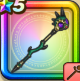

天魔王のつえ
攻略班 8.0点 / ヒャダルコヘナトス念じボール天地邪砲※錬成で強化可能
くわしい特徴
【レベル別習得スキル】 Lv1【賢者】こうげき魔力+12 Lv1ヒャダルコ（消費MP：15）氷の刃で敵全体にヒャド属性の呪文小ダメージを与える Lv10ヘナトス（消費MP：10）敵1体の攻撃力を1段階下げる Lv15ドルマ属性じゅもんダメージ+10％ Lv20念じボール（消費MP：24）敵ランダムに2回呪文中ダメージを与え、まれに呪文耐性を下げる Lv30天地邪砲（消費MP：46）敵全体にドルマ属性の特大呪文ダメージを与える。 Lv35悪魔系へのダメージ+5% Lv40悪魔系へのダメージ+5% Lv45戦闘終了時にMPを10回復させる Lv50【夜間】天地邪砲のダメージ+5%錬成スキル改1偽神の策謀（消費MP：10）戦闘開始時に敵全体にたまにドルマバーストを付与(効果2ターン)。さらに自身のMPをたまに一定量回復する改2天地邪砲改（消費MP：53）闇の力をよびおこし敵全体にドルマ属性の特大呪文ダメージを与える。(このスキルは自身に付与されている効果の数に応じて威力が上昇する)改3悪魔系へのダメージ+10%改4錬成ぶき特別演出解放・メガモン討伐結果発表時に特別演出が追加・武器の見た目に特別なエフェクトが追加 【限界突破スキル】 1凸じゅもんダメージ+5% 2凸じゅもんダメージ+5% 3凸じゅもんダメージ+5% 4凸じゅもんダメージ+5%